S03 — Your Blood Factory — How Blood Works
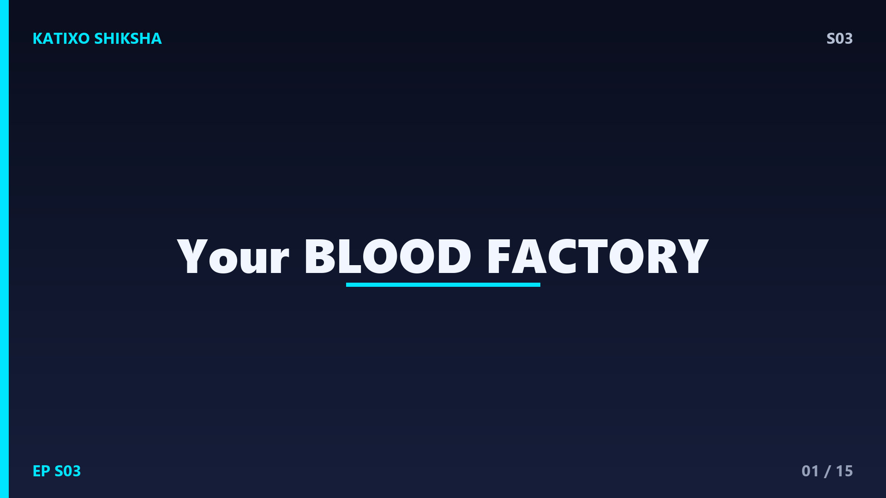
Slide 1Right now, as you're sitting there watching this video, your heart is pumping blood through a network of blood vessels so long that if you stretched them all out end-to-end, they would wrap around the Earth — TWICE. That's about one lakh kilometres of blood vessels inside your body. And every single day, your heart pumps roughly 7,500 litres of blood through this network. But what IS blood? Why is it red? What's actually flowing through your veins? Today on Katixo Shiksha, we open up the blood factory. Let's go!
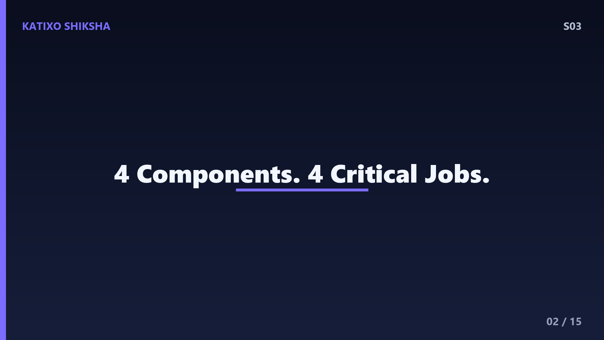
Slide 2When you look at blood, it seems like a simple red liquid. But zoom in with a microscope, and you'll see it's actually a busy, bustling city of different components. Blood has four main parts — red blood cells, white blood cells, platelets, and plasma. Plasma is the liquid part — it's about 55 percent of your blood and it's mostly water with dissolved proteins, salts, and nutrients. The remaining 45 percent is the solid stuff — cells and platelets floating in that plasma. Each component has a specific, critical job. Let's meet them one by one.
Slide 3First up — red blood cells, also called RBCs or erythrocytes. These are the workhorses of your blood. Their one job? Deliver oxygen from your lungs to every cell in your body, and carry carbon dioxide waste back to the lungs. Your body contains about 25 trillion red blood cells — that's 25 followed by twelve zeros. And here's something cool — RBCs don't have a nucleus. They literally kicked out their own control centre to make more room for haemoglobin, the protein that carries oxygen. It's like removing all the seats from a bus to fit more cargo.
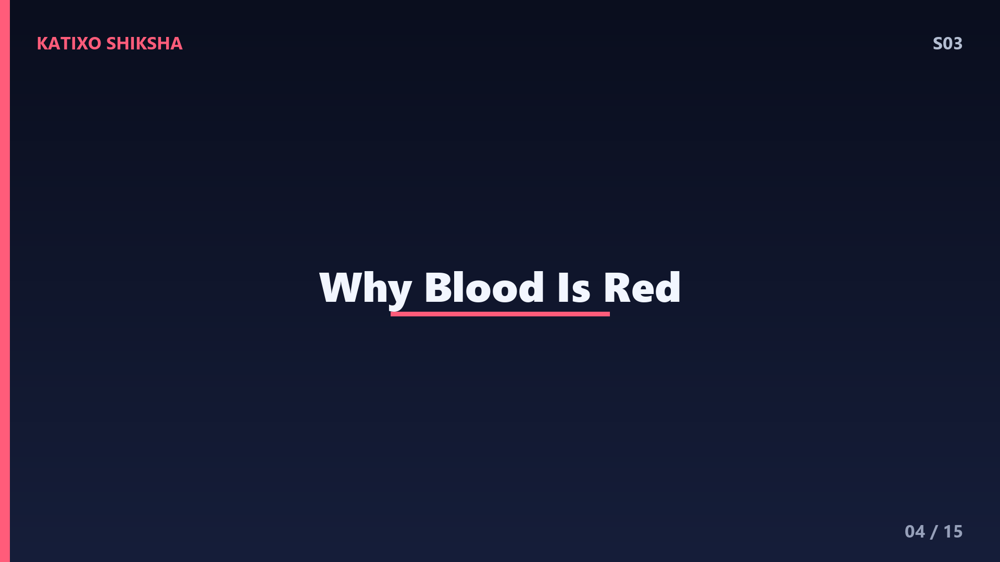
Slide 4Haemoglobin is the reason blood is red. It's a protein that contains iron atoms, and when oxygen binds to that iron, it turns bright red. When oxygen is released and carbon dioxide takes its place, the haemoglobin turns darker — more of a deep maroon. This is why doctors sometimes talk about 'oxygenated' blood being bright red and 'deoxygenated' blood being dark red. And no — your blood is NEVER blue. The blue veins you see through your skin are just an optical illusion caused by how light penetrates your skin and gets absorbed differently. Blue light reflects back, red light gets absorbed. Your blood is always some shade of red.
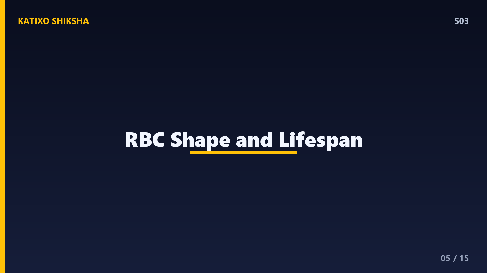
Slide 5Each red blood cell has a unique disc shape — flat and pinched in the middle, like a donut without the hole. This biconcave shape isn't random. It maximizes surface area for oxygen exchange, and it makes the cell flexible enough to squeeze through capillaries that are narrower than the cell itself. Imagine squeezing a rubber disc through a tube — it bends and pops back. RBCs do this thousands of times during their 120-day lifespan. After about 4 months, they're worn out and get recycled by your spleen and liver. Your body destroys about 2 million old RBCs every second — and makes 2 million new ones to replace them.
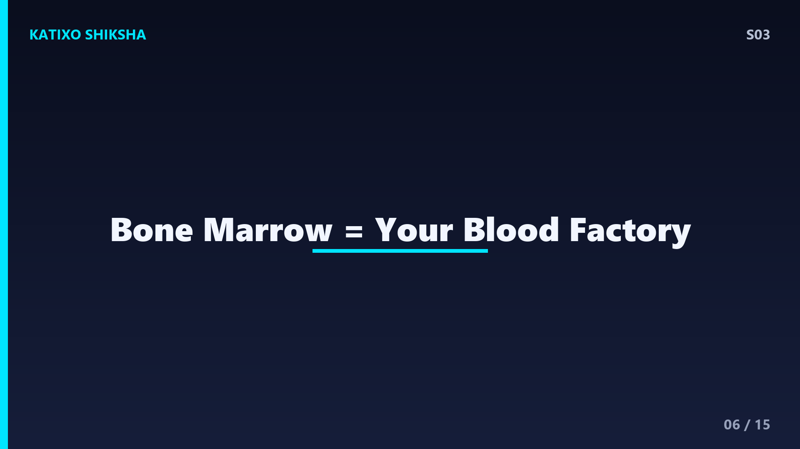
Slide 6Where are these new blood cells made? In your bone marrow — the soft, spongy tissue inside your bones. This is your blood factory. Specifically, blood cells are produced in the marrow of flat bones like your hip bones, skull, ribs, and vertebrae. Bone marrow contains stem cells — special cells that can transform into any type of blood cell. Every single day, your bone marrow produces about 200 billion new red blood cells, along with white blood cells and platelets. That factory never shuts down, not even for a second.
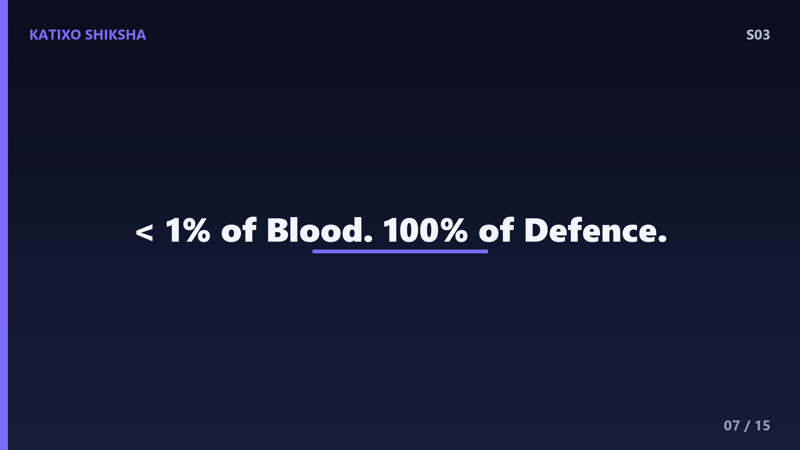
Slide 7Now let's talk about the immune system's soldiers — white blood cells, or WBCs. These make up less than 1 percent of your blood, but they're absolutely critical. They're your body's defence force against bacteria, viruses, parasites, and even cancer cells. There are many types — neutrophils are the frontline fighters that rush to infection sites and eat invaders. Lymphocytes include B-cells that make antibodies and T-cells that directly kill infected cells. Macrophages are the cleanup crew — they swallow dead cells and debris. It's a full military operation happening inside you right now.
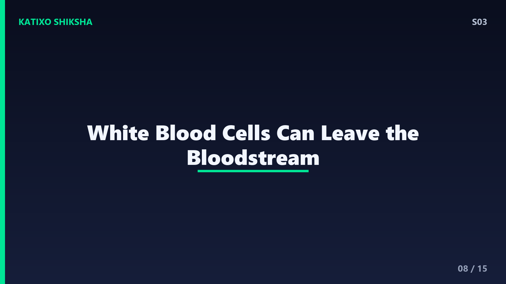
Slide 8Here's something wild about white blood cells — they can actually leave the blood vessels. When there's an infection somewhere in your body, chemical signals are released. White blood cells detect these signals, and they literally squeeze through the walls of blood vessels to reach the infected tissue. This process is called diapedesis. The blood vessel walls are made of cells with tiny gaps, and WBCs change their shape to slip through. It's like a soldier crawling under a fence to reach the battlefield. The redness and swelling you see during an infection? That's blood vessels widening to let more WBCs through.
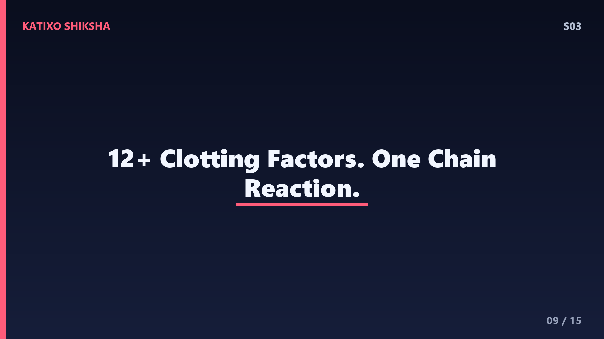
Slide 9Third component — platelets, also called thrombocytes. These are tiny cell fragments — they're not even full cells — and their job is to stop bleeding. When you get a cut, damaged blood vessel walls expose a protein called collagen. Platelets detect this, rush to the site, and start sticking together. They form a temporary plug while releasing chemicals that activate the clotting cascade — a chain reaction of proteins that creates a strong mesh of fibrin strands. This mesh traps more platelets and red blood cells, forming a solid clot. A simple paper cut triggers a chain reaction involving over 12 different clotting factors. Your body takes wound repair very seriously.
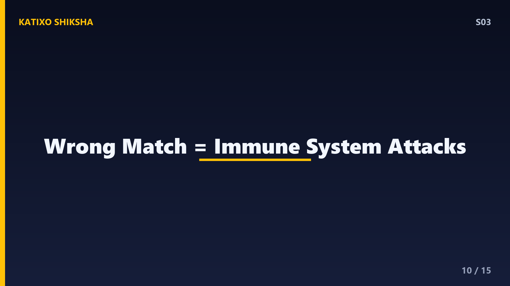
Slide 10Let's talk blood types — something you've probably heard of but maybe don't fully understand. Your blood type is determined by antigens — protein markers — on the surface of your red blood cells. Type A has A antigens. Type B has B antigens. Type AB has both. Type O has neither. Then there's the Rh factor — positive means you have the Rh protein, negative means you don't. So when someone says they're B-positive, it means B antigens plus Rh protein. Why does this matter? Because if you receive blood with the wrong antigens, your immune system attacks those foreign cells. That's why blood type matching in transfusions is literally life or death.
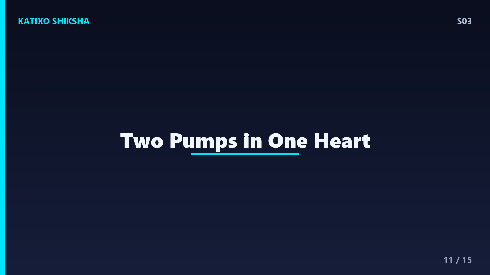
Slide 11The circulatory system that carries all this blood has two loops. The pulmonary circuit goes from heart to lungs and back — it picks up oxygen and drops off carbon dioxide. The systemic circuit goes from heart to the entire body and back — it delivers that oxygen and picks up waste. Your heart is basically two pumps in one. The right side handles the lung loop, the left side handles the body loop. And the left side's walls are thicker because it needs more force to push blood all the way to your toes and back. The left ventricle alone generates enough pressure to squirt blood nearly 10 metres. Your heart is ridiculously powerful for its size.
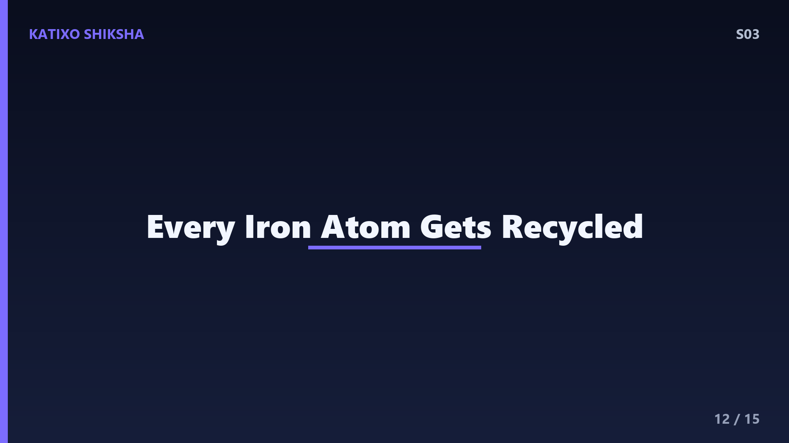
Slide 12Here's a fact that might change how you think about your body — if all the haemoglobin in your blood were extracted and compressed, it would contain about 3 to 4 grams of iron. That doesn't sound like much, but it's enough to make a small nail. Your body fights hard to recycle every atom of iron from dead red blood cells because iron is precious and hard to absorb from food. This is why iron-deficiency anaemia is one of the most common nutritional problems worldwide — especially among teenagers and women. When you don't have enough iron, you can't make enough haemoglobin, so your blood carries less oxygen. That's why anaemia makes you feel tired all the time.
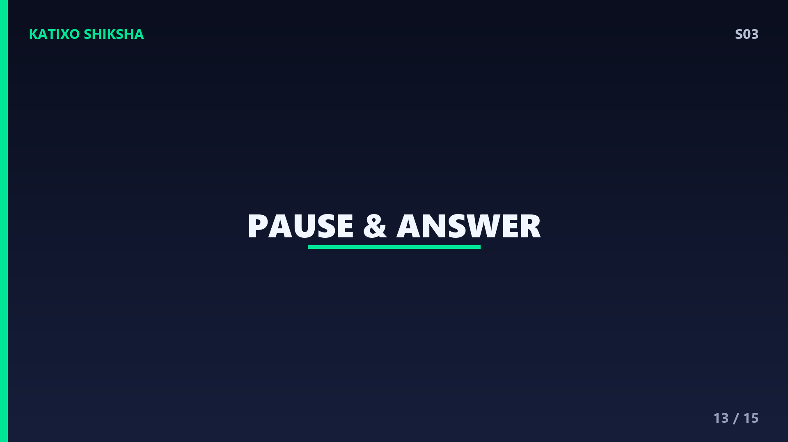
Slide 13Quiz time — test yourself! Question one — what protein in red blood cells carries oxygen, and what element in it makes blood red? Question two — where are new blood cells manufactured? Question three — what determines your blood type — what are the markers called? Pause the video. Write your answers. Active recall is the single most effective study technique backed by cognitive science. Don't skip it.
Slide 14Answers! Question one — haemoglobin, and the iron atoms in it give blood its red colour. Question two — bone marrow, specifically in flat bones like hip bones, ribs, skull, and vertebrae. Question three — antigens on the surface of red blood cells. A antigens, B antigens, both, or neither — plus the Rh factor. If you got all three, your blood factory knowledge is officially top-tier.
Slide 15Let's recap. Blood has four components — RBCs carry oxygen using haemoglobin, WBCs fight infections, platelets stop bleeding through clotting, and plasma transports everything. New blood cells are made in bone marrow from stem cells. Your blood type depends on surface antigens — A, B, AB, or O, plus Rh positive or negative. And your circulatory system runs two loops — pulmonary for the lungs, systemic for the body. Your blood is not just a liquid — it's a living, working system. Next episode — we're leaving Earth. How do rockets escape gravity? What's escape velocity? Subscribe and find out. Bye!